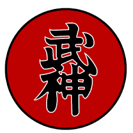

Definição
Bujinkan (神武館) ou Bujinkan Budo Taijutsu é uma organização de artes maciais, criada pelo Dr. Masaaki Hatsumi em 1972 para promover a arte Ninja e as nove antigas tradições do guerreiro.
A organização é composta por um conjunto de nove escolas ou tradições (ryū), com três estilos de Ninjutsu e outros estilos da tradição Samurai e Budo. O grande mestre Masaaki Hatsumi viajava para fora do Japão todos os anos para ministrar Taikai (grande encontro ou grande estágio) em várias partes do mundo.
